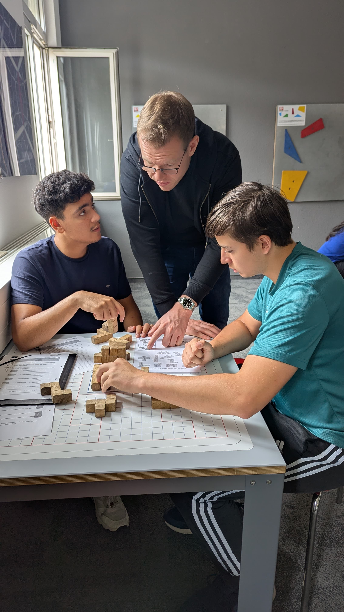
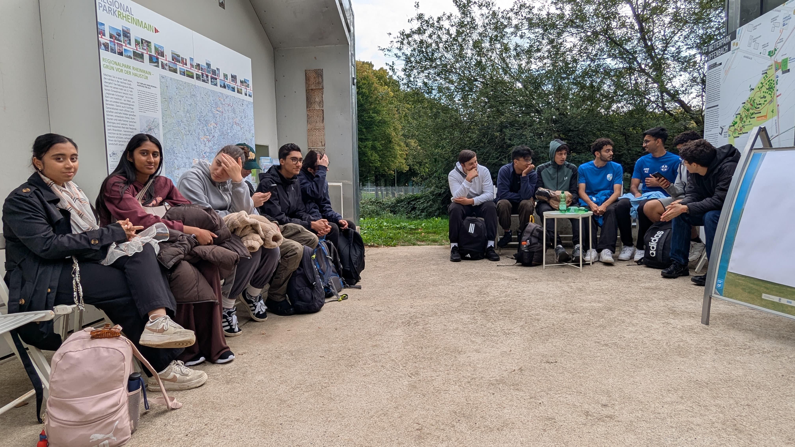
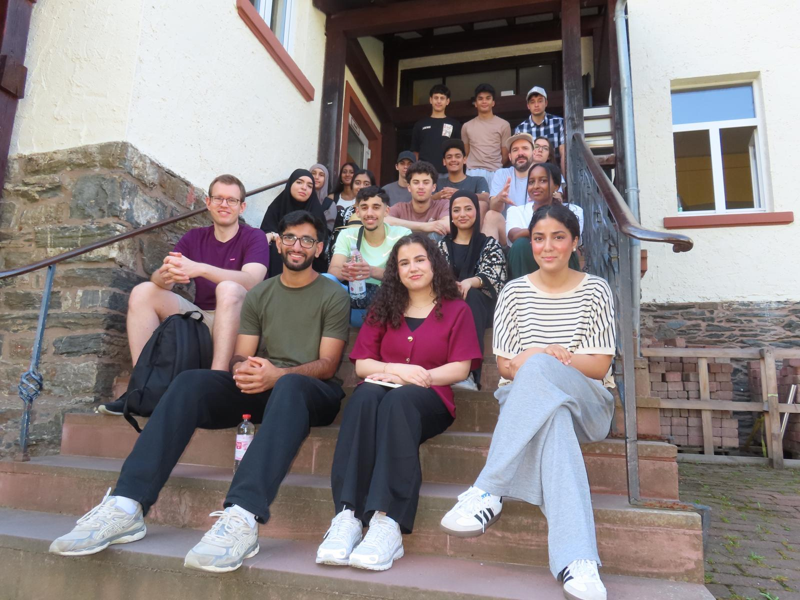
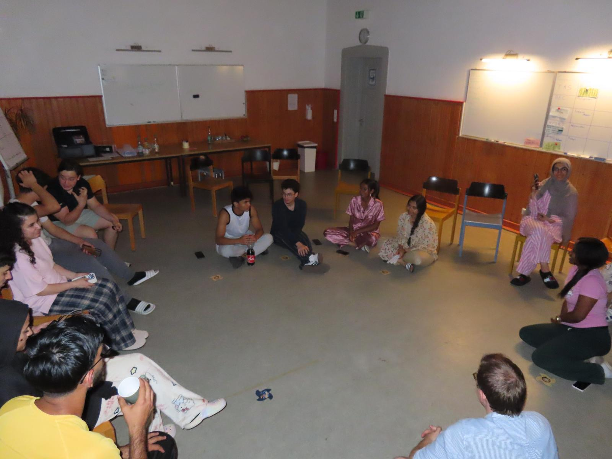
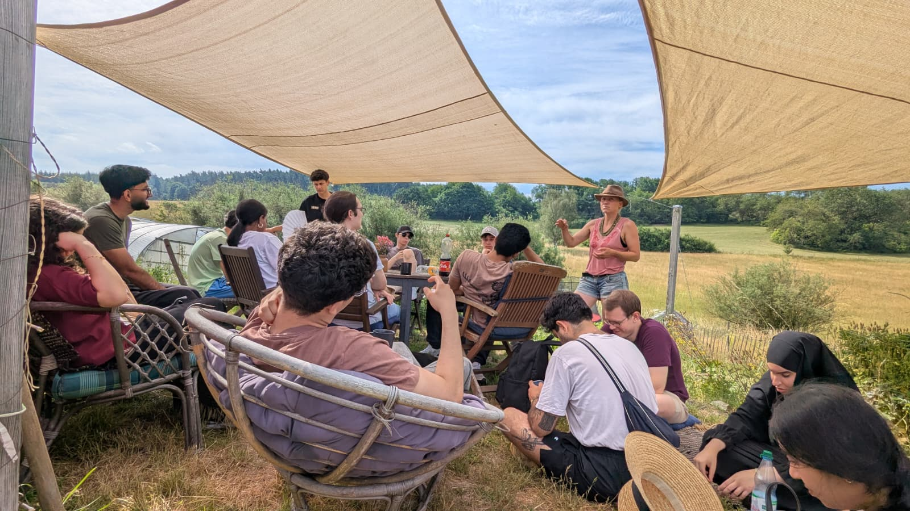

Im Laufe des Projektjahres haben wir drei Orte besucht, die jeweils einen eigenen Zugang zum Thema Klimawandel ermöglichten – von Messdaten über Wissenschaftskommunikation bis hin zu konkreten Handlungsperspektiven.
EXPERIMENTA Frankfurt
.jpeg)

.jpeg)
.jpeg)
Am ersten Projekttag besuchten wir das Experiminta-Museum. Dort konnten wir uns frei bewegen und die verschiedenen interaktiven Stationen eigenständig ausprobieren. Besonders interessant waren die mathematischen und physikalischen Knobelaufgaben, die zum Experimentieren und Mitmachen einluden. Zusätzlich wurden wir in Gruppen eingeteilt und erhielten Arbeitsblätter mit verschiedenen Aufgaben. Diese sollten wir mithilfe der Ausstellungsstücke selbstständig bearbeiten und die Lösungen erschließen. Dabei beschäftigten wir uns unter anderem mit dem Thema Schwingungen sowie weiteren mathematischen und physikalischen Phänomenen.
Highlights
Mathematik
Pascalsches Dreieck
Eine Zahlenanordnung, bei der jede Zahl die Summe der beiden darüber stehenden ist. Die Zeilen liefern direkt die Binomialkoeffizienten – unverzichtbar für Bernoulli-Experimente in der Stochastik und die binomischen Formeln in der Algebra.
Physik
Klangfiguren mit Sand
Mit Schallwellen und einer mit Sand bestreuten Röhre lassen sich stehende Sinusschwingungen sichtbar machen: An den Schwingungsknoten sammelt sich der Sand und zeichnet so die Wellenform direkt auf.
Mathematik & Physik
Kugelbahn auf Funktionsgraphen
Kugeln rollen auf verschiedenen Funktionsgraphen entlang – je steiler die Steigung, desto schneller die Kugel. Ein anschauliches Experiment zur Verbindung von Differentialrechnung und Bewegungsenergie.
Deutscher Wetterdienst (DWD)
.jpeg)
.jpeg)
.jpeg)
- 1 – Lufttemperatur: amtliche Messung in 2 m Höhe
- 2 – Datenlogger: sammelt alle Sensordaten
- 3 – Luftfeuchtigkeit: Sensor in der Wetterhütte
- 6 – Bodennahe Temperatur: in 5 cm Höhe (Bodenfrost)
- 7 – Niederschlagsmesser mit Windschutzring
- 8 – Erdbodentemperatur, flach
- 11 – Erdbodentemperatur, mitteltief
- 12 – Globalstrahlung: Sonnenintensität
- 13 – Erdbodentemperatur, tief (bis 1 m)

.jpeg)
Am zweiten Profiltag besuchten wir zunächst den Deutschen Wetterdienst in Offenbach. Dort beschäftigten wir uns mit den Themen Wetter und Klima und lernten insbesondere den Unterschied zwischen beiden Begriffen kennen. Das Wetter beschreibt den aktuellen Zustand der Atmosphäre an einem bestimmten Ort zu einer bestimmten Zeit, beispielsweise hinsichtlich Temperatur, Niederschlag oder Wind. Das Klima hingegen bezeichnet die durchschnittlichen Wetterverhältnisse über einen langen Zeitraum von mehreren Jahrzehnten.
Außerdem wurden uns verschiedene Messinstrumente vorgestellt und erklärt, wie man mit ihnen unter anderem die Temperatur, den Luftdruck, den Niederschlag, die Luftfeuchtigkeit und die Windgeschwindigkeit misst. Dabei erfuhren wir, dass moderne Messgeräte und leistungsstarke Computersysteme sehr präzise Wettervorhersagen ermöglichen. Die gewonnenen Daten werden anschließend verarbeitet und unter anderem in Wetter-Apps bereitgestellt, die viele Menschen zur Planung ihres Alltags nutzen. Zusätzlich wurde uns erklärt, dass Wettervorhersagen mithilfe komplexer mathematischer Modelle berechnet werden, bei denen Computer große Mengen an Wetterdaten analysieren und daraus Prognosen für die kommenden Tage erstellen.
Was wir gelernt haben
Bei unserem Besuch beim DWD haben wir vor allem gelernt, wie wichtig die klare Trennung zwischen Wetter und Klima ist: Während das Wetter uns den aktuellen Zustand der Atmosphäre zeigt, spiegelt das Klima die Statistiken über viele Jahrzehnte wider. Besonders spannend war zu sehen, wie die physikalischen Daten – von der Luftfeuchtigkeit bis zur Windgeschwindigkeit – überhaupt erst mit realen Messgeräten erfasst werden. Uns wurde klar, dass hinter den vertrauten Vorhersagen auf unseren Smartphones kein Zufall steckt, sondern extrem komplexe mathematische Modelle und die enorme Rechenleistung moderner Supercomputer, die diese riesigen Datenmengen für unseren Alltag auswerten.
„Es ist faszinierend zu sehen, wie die oft theoretische Physik und Mathe aus dem Unterricht hier plötzlich eine reale Bedeutung für unseren Alltag bekommen. Der Einblick in die High-Tech-Infrastruktur des DWD hat mir erst richtig gezeigt, wie viel Aufwand hinter jeder einzelnen Prognose steckt."
— Hila Pashtun, Klasse 12A
Kletterwald
Im Anschluss besuchten wir den Kletterwald. Dieser Ausflug bot einen gelungenen Ausgleich zum theoretischen Teil des Tages und gab uns die Möglichkeit, gemeinsam Spaß zu haben und uns sportlich zu betätigen. Gleichzeitig verbrachten wir die Zeit mitten in der Natur, wodurch uns noch einmal bewusst wurde, wie wertvoll und schützenswert unsere Umwelt ist. Die Verbindung aus fachlichem Lernen und praktischen Erlebnissen machte den Tag besonders abwechslungsreich und verdeutlichte die Bedeutung des Natur- und Klimaschutzes auf eine anschauliche Weise.
.jpeg)
.jpeg)
.jpeg)
.jpeg)
medico international
Am dritten und vierten Profiltag nahmen wir an einem zweitägigen Workshop mit medico international teil. Ein Teil des Workshops fand in den Räumlichkeiten von medico international im Ostend statt, der andere an unserer Schule im 5. Stock. Gemeinsam beschäftigten wir uns mit den globalen Folgen des Klimawandels und deren Auswirkungen auf das Leben der Menschen weltweit.
Dabei lernten wir, dass der Klimawandel nicht nur ökologische Probleme verursacht, sondern auch politische, wirtschaftliche und insbesondere soziale Folgen hat. Außerdem wurde deutlich, dass viele ärmere Länder besonders stark von Naturkatastrophen wie Überschwemmungen, Dürren oder anderen extremen Wetterereignissen betroffen sind, obwohl sie oft nur einen geringen Anteil an den weltweiten Emissionen verursachen.
Während des Workshops nahmen wir an einem Quiz mit verschiedenen Fragen zum globalen Klimawandel teil und spielten interaktive Spiele. Bei einer Aufgabe sollten wir beispielsweise anhand der Anzahl der auf verschiedene Kontinente verteilten Stühle einschätzen, wie hoch der Kunststoffkonsum in den jeweiligen Regionen ist. Dadurch wurden globale Ungleichheiten anschaulich dargestellt.
Am Ende der beiden Profiltage wurde uns bewusst, dass der Klimawandel nur durch internationale Zusammenarbeit und gesellschaftlichen Zusammenhalt wirksam bekämpft werden kann. Die Bewältigung dieser globalen Herausforderung erfordert gemeinsames Handeln und Verantwortung über Ländergrenzen hinweg.
basa eV · Neu-Anspach

Tag 1
Am Montag haben wir um 11:00 Uhr mit dem Workshop begonnen. Zuerst haben wir uns etwa 1,5 Stunden mit dem Thema Kolonisierung beschäftigt. Dabei haben wir gelernt, was Kolonisierung bedeutet und welche Auswirkungen sie auf verschiedene Länder und Menschen hatte. Anschließend gab es Mittagessen – das Essen war sehr lecker. Während der Mittagspause durften wir in unsere Zimmer gehen und es uns dort gemütlich machen. Nach der Pause haben wir weiter zum Thema Kolonisierung gearbeitet und besprochen, wie die Folgen der Kolonisierung mit der heutigen Klimakrise zusammenhängen. Am Abend haben wir gemeinsam Fußball geschaut und den Tag entspannt ausklingen lassen.
Tag 3
Der zweite Tag begann um 8:00 Uhr mit dem Frühstück. Um 9:00 Uhr trafen wir uns, um organisatorische Dinge zu besprechen, bevor wir in Gruppen eingeteilt wurden. Einige Gruppen drehten Videos, während andere ein Plakat erstellten – so konnten wir die Inhalte des Workshops kreativ bearbeiten. Später präsentierten alle Gruppen ihre Ergebnisse vor der ganzen Klasse. Zum Mittagessen gab es Ofenkartoffeln mit Gemüse und einer Joghurt-Kräuter-Soße. Danach packte jeder seine Sachen, räumte sein Zimmer auf und wir traten gemeinsam die Heimreise an.

„Wir fanden den Ausflug insgesamt richtig gut. Die Workshops über Kolonisierung waren zwar manchmal anstrengend, aber wir haben echt viel Neues gelernt und uns danach zusammen gefragt, wie das alles mit der Klimakrise zusammenhängt – das hat uns ziemlich überrascht. Cool war auch, dass wir nicht die ganze Zeit nur geredet haben, sondern selbst Videos drehen und Plakate gestalten durften. Das hat auf jeden Fall mehr Spaß gemacht als normaler Unterricht. Alles in allem war es eine tolle Klassenfahrt, die wir so schnell nicht vergessen werden."
Mohammed Achraf — 12A
SoLaWi · Neu-Anspach

Tag 2
Außerdem unternahmen wir eine Exkursion zur SoLaWi in Neu-Anspach. Dort beschäftigten wir uns ebenfalls mit den Ursachen und Folgen des Klimawandels. Ziel des Besuchs war es, die Zusammenhänge des menschengemachten Klimawandels besser zu verstehen, eigene Handlungsmöglichkeiten kennenzulernen und Erfahrungen zu sammeln, die die eigene Handlungsfähigkeit stärken.
Ein weiterer Schwerpunkt war die Förderung des kritischen Denkens im Umgang mit sozialen Medien. Dabei lernten wir, Informationen nicht ungeprüft zu übernehmen, sondern sie kritisch zu hinterfragen und auf ihre Glaubwürdigkeit zu überprüfen. Trotz des ernsten und sensiblen Themas kam der Spaß nicht zu kurz, da gemeinsames und aktives Lernen besonders nachhaltig ist. Unter anderem gab es ein Quiz zum Austausch von Erfahrungen sowie verschiedene interaktive Methoden, bei denen wir unsere Gedanken und Gefühle zum Thema Klimagerechtigkeit ausdrücken konnten. Dadurch wurde unser Interesse an dem Thema geweckt und vertieft.